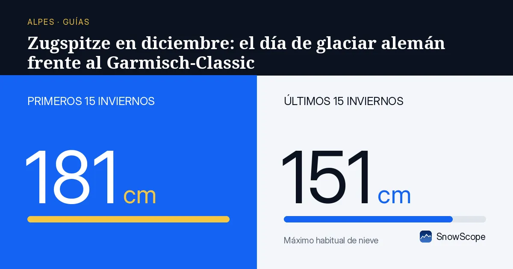

Zugspitze en diciembre: el día de glaciar alemán frente al Garmisch-Classic
A mediados de diciembre, la meseta glaciar de Zugspitze descansa bajo nieve profunda mientras la zona más baja de Garmisch-Classic muestra una cobertura más delgada. Ambas áreas cuestan aproximadamente 70 EUR por forfait diario en línea, pero la profundidad de nieve en cada altitud cuenta una historia diferente sobre dónde va tu dinero.
Consulta la previsión de nieve en tiempo real de Zugspitze en la app SnowScopeEspesor de nieve, alertas de nieve polvo y mapa 3D, gratis.
Un pueblo, dos montañas muy diferentes
Garmisch-Partenkirchen se sitúa al pie de la montaña más alta de Alemania. El área glaciar de Zugspitze va desde la estación del valle a 995 m hasta 2627 m, con 16 km de pistas señalizadas servidas por 38 remontes. Garmisch-Classic se extiende sobre 38 km de pistas desde 727 m hasta 2047 m con 18 remontes, todo dentro del mismo pueblo.
En diciembre, la elección entre ambas es clara pero cara. Puedes pagar por nieve profunda y fiable en una pequeña meseta glaciar, o más terreno pero cobertura incierta más abajo.


Dónde la nieve es segura en diciembre
La cima de Zugspitze a 2627 m tuvo 30 cm o más en cada invierno durante la semana del 15 al 21 de diciembre en 46 inviernos de registros. En la semana de Navidad, el 96 % de los inviernos llevaba 60 cm o más. Incluso un año delgado —el tipo que ocurre una vez cada diez inviernos— aguanta 62 cm allí el 15 de diciembre. El invierno pasado dejó 80 cm.
La cima de Garmisch-Classic (2047 m) tuvo 30 cm esa misma semana en el 89 % de los inviernos, pero su zona media (1387 m) solo en el 48 % de los inviernos. La base a 727 m ve solo 6 cm típicos el 15 de diciembre. Para esquiar en diciembre, solo la cima de Zugspitze y los remontes superiores de Garmisch-Classic son fiables.
Profundidad de nieve por fecha en diciembre
En la cima del glaciar de Zugspitze, espera 81 cm el 1 de diciembre, 122 cm el 15 de diciembre, y 144 cm la víspera de Navidad. A media montaña (1811 m), las cifras son 35, 52 y 67 cm. La estación del valle base promedia solo 7, 12 y 14 cm en esos mismos períodos—no es suficiente para esquiar.
La cima de Garmisch-Classic aumenta de 46 cm (1 dic) a 57 cm (15 dic) a 71 cm (24 dic), mientras su zona media va de 24 cm a 28 cm a 36 cm. Ambas áreas ven nieve más abundante desde finales de diciembre en adelante, pero principios de diciembre en Garmisch-Classic es delgado excepto en la cima.
Qué significan los números para un día en diciembre
Si tienes buen tiempo, el glaciar de Zugspitze ofrece condiciones ciertas: una meseta ancha y suave donde la cobertura es profunda y estable desde principios de diciembre. Las pistas no son largas, pero la nieve es fiable. Si una tormenta cierra la meseta, no tienes plan B en esa montaña.
Garmisch-Classic ofrece más variedad y más pistas, pero los esquiadores de diciembre deben mantenerse en los remontes superiores. La cobertura a media montaña es incierta; la base es inutilizable. El compromiso es terreno por una cobertura cada vez más delgada.
Precios de forfaits y la opción del pase de temporada
Un forfait diario para adultos en Zugspitze cuesta 70,50 EUR en línea para 2026-27, incluido el viaje en teleférico o ferrocarril de cremallera. Garmisch-Classic es 69 EUR en línea. Las páginas oficiales notan que los precios en taquilla son más altos que las tarifas en línea. Ningún centro listea un pase de 6 días en la página de precios principal.
El valor de diciembre está en el forfait diario comprado en línea, no el pase semanal. Elige tu área por la predicción, compra en línea, y mantén ambas montañas en mente como planes de respaldo si una cierra o el tiempo empeora.
Cómo este diciembre se compara con el pasado
La nieve de Zugspitze en diciembre se ha mantenido estable: la profundidad típica del 15 de diciembre fue 112 cm en los primeros 15 inviernos de registros (1980-95) y 115 cm en los 15 más recientes (2011-26). El invierno pasado fue 80 cm, por debajo de la mediana reciente pero aún esquiable de forma fiable.
Garmisch-Classic a media montaña cuenta una historia menos alentadora. La profundidad de diciembre allí ha bajado de 54 cm típicos en inviernos anteriores a 47 cm en los recientes. Esta tendencia invernal es leve, no dramática, pero importa para un centro que depende de reservas de diciembre.
Consejos para esquiadores
- Compra tu forfait diario en línea antes de llegar: es más barato que el precio en taquilla.
- En Zugspitze, baja por las pistas del glaciar y toma el teleférico o tren de vuelta; la nieve de diciembre en la base del valle es demasiado delgada para esquiar.
- En Garmisch-Classic a mediados de diciembre, usa solo los dos remontes superiores a menos que llegue nieve fresca; la altitud media tiene 30 cm de cobertura en menos de la mitad de los diciembres pasados.
- Consulta el boletín de aludes de Baviera (Lawinenwarndienst Bayern) antes de cualquier esquí fuera de pista en el glaciar de Zugspitze.
- Si se pronostica que la meseta de Zugspitze cierre (tormenta o frío extremo), los remontes superiores de Garmisch-Classic se convierten en tu opción de diciembre; consulta la predicción la noche anterior.
Sobre estas cifras
Los espesores de nieve de las estaciones son la nieve más profunda en las pistas altas en la fecha indicada; son estimaciones para una zona, no una medida en un punto. Las previsiones pueden cambiar. Consulta siempre el boletín oficial de aludes antes de salir fuera de pista.
Boletines oficiales de aludes: Lawinenwarndienst Bayern
Citar este informe
Para investigación, docencia o prensa: cifras y gráficos reutilizables libremente bajo CC BY 4.0 con esta cita.
SnowScope (2026), Zugspitze en diciembre: el día de glaciar alemán frente al Garmisch-Classic, https://snowscope.app/blog/es/2026/11/zugspitze-december-skiing-germany-glacier-price.html, consultado el 2026-11-14
SnowScope (Atlas Labs). (2026, November 14). Zugspitze en diciembre: el día de glaciar alemán frente al Garmisch-Classic. SnowScope snow reports. https://snowscope.app/blog/es/2026/11/zugspitze-december-skiing-germany-glacier-price.html
BibTeX
@misc{snowscope2026zugspitzedecemberskiingg,
author = {{SnowScope (Atlas Labs)}},
title = {Zugspitze en diciembre: el día de glaciar alemán frente al Garmisch-Classic},
year = {2026},
month = nov,
howpublished = {\url{https://snowscope.app/blog/es/2026/11/zugspitze-december-skiing-germany-glacier-price.html}},
note = {Published 2026-11-14 13:29 UTC; accessed 2026-11-14}
}· CC BY 4.0 · Métodos, datos y herramientas →
Zugspitze: nieve y temperatura según la altura, este invierno vs el pasado (herramientas) →
Sigue Zugspitze
Gratis: un aviso cuando llega la nieve y la previsión cada mañana.